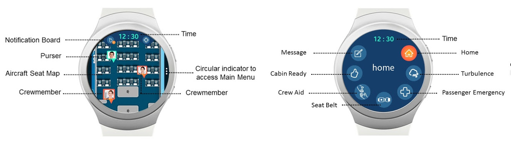

CHALLENGE
Collaboration is vital among flight attendants work activities amongst to ensure onboard safety and a high level of customer service. Yet, the challenge is it can be difficult to maintain efficient communication, situational awareness, and quick information exchange given the technologies advancements on the aircraft. However, the existing communication channels in these flights become inaccessible, burdensome, and hard to use while performing emergency and even normal activities.
PROCESS
Stephanie Wong conducted a study with flight attendants to understand their communication practices, problems faced by them during their routine tasks and the common communication challenges they face. Based on these results she proposed and designed the wireframes for a smart-watch application to solve this communication and awareness barrier among flight attendants.
Development
I translated the high-fidelity wireframes into a smart watch application design for Samsung gear S2 watch. The app was designed as a web-based application using the proprietary
Tizen SDK. I selected the web-based approach to ensure the app could be easily scalable to other platforms in the future.
To enable real-time messaging I deployed an event-driven server built using
Node.js and web sockets to support real-time communication and notifications to all or selected crew members.
I used
BLE beacons inside the flight to track the location of flight attendants and update the flight attendants location inside the flight. The watch would detect the closest beacon by comparing the round trip time (RTT).
OUTCOME
User Experience of the Application
Users could interact with the application by swiping up and down on the watch face to move within the spatial map of the plane. Users could also use the dial to navigate the menu and scroll down the page. Notifications would appear on top of the spatial map and the menu could be accessed by tapping on the three dot menu on the right side of the watch face.

source: Stephanie Wong (http://veravibes.blogspot.ca/2017/01/smartcrew.html)
Menu options and features
- Turbulence: Flight attendants see additional details about notifications that turbulence is coming along with the duration and type. These notification are passed from the pilot to the lead flight attendants.
- Passenger Aid: Flight attendants see alerts about any medical emergencies with passengers. They can also post any new situations which are then transmitted to all or nearby flight attendants.
- Fasten Seatbelt: Flight attendants see details about notifications for fastening their seatbelt for safety. These come from the pilots, or can be set by lead flight attendants using the watch interface.
- Crew member Assistance: Flight attendants see notifications about a particular crewmember requiring immediate assistance, the type of help required, and the person's location. They can also report the need for someone to assist them. This causes their icon on the map to change colors so that other flight attendants know they require assistance.
- Cabin Check: Flight attendants report their status during cabin check at the start of the flight. Flight attendants also see notifications about which crew members completed their safety and security checks and how many flight attendants are yet to finish.
- Messaging: Flight attendants can select from predefined text messages and send them to one or more flight attendants. Each predefined messages is associated with a unique vibration pattern. When a message arrives, flight attendants can either look at the watch to read it, or feel the vibration pattern to determine the message by using the app over a period of time. This would allow them to continue on with their current task without additional interactions